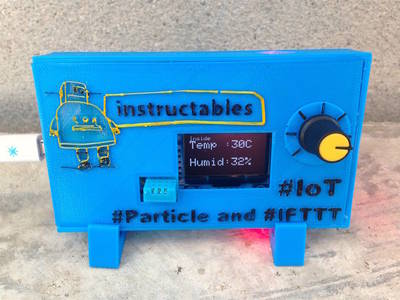
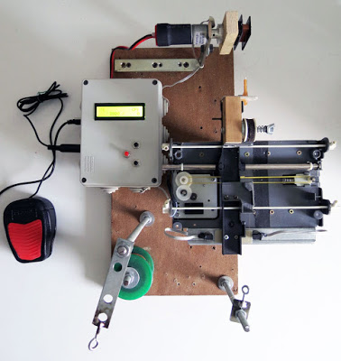

2016-06-09 - Nº 58

Editorial
Esta é a Newsletter Nº 58 que se apresenta com o mesmo formato que as anteriores. Se gostar da Newsletter partilhe-a!
Todas as Newsletters encontram-se indexadas no link.
Esta Newsletter tem os seguintes tópicos:
Esta semana foi lançado ao mar o Solar Voyager a partir de perto de Boston nos EUA. Trata-se de um navio robótico que usa energia solar para se movimentar e que irá fazer uma viagem no oceano Atlântico até Lisboa - onde chegará, se tudo correr bem, pelo Outono. A sua viagem pode ser acompanhada aqui. A AirBUS construiu o primeiro drone impresso em 3D. Designado por THOR, este drone tem cerca de 4 metros de comprimento e pesa cerca de 21 quilos. A KnuEdge apresentou um processador - o KNUPATH™ LambdaFabric - que permite, usando uma arquitectura fundamentalmente diferente, criar data centers com capacidades de computação neuronal para suportar avanços em machine learning, IoT e processamento de sinal.
Na Newsletter desta semana apresentamos diversos projetos de maker. Na rubrica "Documentação" apresentamos oito livros (eBooks) que podem ser descarregados livremente e que esta semana são sobre Windows Azure, fundamentos de Bases de Dados e desenvolvimento de aplicações em GTK+ / Gnome.
 João Alves ([email protected])
João Alves ([email protected])
O conteúdo da Newsletter encontra-se sob a licença  Creative Commons Attribution-NonCommercial-ShareAlike 4.0 International License.
Creative Commons Attribution-NonCommercial-ShareAlike 4.0 International License.
Novidades da Semana ^
‘Solar Voyager’ autonomous boat looks to make history in sun-powered journey across the Atlantic
"About 200 miles due east of Boston, a robotic boat is putting along at a walking pace on what could be an historic journey across the entire Atlantic. “Solar Voyager,” built by two friends in their spare time, would be the first autonomous vessel to cross that ocean — and the first one to cross any ocean using solar power alone. Isaac Penny and Christopher Sam Soon have been tinkering away on the project for four years now and, while the craft, which they launched on June 1, still has a long way to go, it’s safe to say it’s already a success in many ways. Nevertheless, the two built Solar Voyager from scratch, with only the solar panels and some standard motor parts taken off the shelf. The 18-foot boat is slowly making its way between GPS waypoints and, if all goes well, it should arrive in Portugal this fall."
Airbus Officially Unveils Thor, the Fully 3D Printed Plane that Flies Beautifully

"The first 3D printed plane is making its debut, and nope, it’s not another one that’s been made in miniature by a hobbyist. And while it’s not full-scale, it’s certainly presenting a huge milestone to the world as a 13-foot flying drone. It’s also the perfect example of how a company like Airbus is able to use every benefit of 3D printing in creating what is obviously just a stepping stone to their eventual fleet of futuristic 3D printed jets."
KnuEdge Accelerates Neural Computing With Introduction of KNUPATH LambdaFabric Processor Technology
"KnuEdge™ Inc., a neural technology innovation company that launched today, introduced its KNUPATH™ LambdaFabric™ processor technology enabling ground-breaking scalability, latency and workload performance in next-generation data centers. With a fundamentally different architecture than legacy products, KNUPATH can operate alone or be integrated with other devices, and it is available now to both end customers and technology vendors seeking to create data center neural computing capabilities to support advancements in machine learning, IoT and signal processing."
Outras notícias
- Intel® Xeon® Processor E7 v4 Family
- Has the age of quantum computing arrived?
- New Time-of-Flight Ranging Sensor from STMicroelectronics Boosts Range and Speed, in Industry’s Smallest Footprint
Ciência e Tecnologia ^
Robots Get Creative To Cut Through Clutter
"Clutter is a special challenge for robots, but new Carnegie Mellon University software is helping robots cope, whether they're beating a path across the moon or grabbing a milk jug from the back of the refrigerator. The software not only helped a robot deal efficiently with clutter, but it also surprisingly revealed the robot's creativity in solving problems."
-
"A team of MIT researchers has for the first time demonstrated a device based on a method that enables solar cells to break through a theoretically predicted ceiling on how much sunlight they can convert into electricity. Ever since 1961 it has been known that there is an absolute theoretical limit, called the Shockley-Queisser Limit, to how efficient traditional solar cells can be in their energy conversion. For a single-layer cell made of silicon — the type used for the vast majority of today’s solar panels — that upper limit is about 32 percent. But it has also been known that there are some possible avenues to increase that overall efficiency, such as by using multiple layers of cells, a method that is being widely studied, or by converting the sunlight first to heat before generating electrical power. It is the latter method, using devices known as solar thermophotovoltaics, or STPVs, that the team has now demonstrated."
Biomolécula ligada a doenças neurodegenerativas é detectada
"Pesquisadores do Laboratório Nacional de Nanotecnologia (LNNano) desenvolveram um dispositivo eletrônico simples para a detecção de um par de biomoléculas relacionadas a diversos tipos de câncer e a doenças neurodegenerativas, como o Alzheimer e Parkinson. O desenvolvimento é baseado em um transistor com uma camada orgânica em escala nanométrica que, em meio líquido, pode identificar facilmente o peptídeo glutationa reduzida (GSH) e a enzima glutationa S-transferase (GST). Diferente de transistores convencionais, que são formados por multicamadas de diversos materiais, o dispositivo desenvolvido no LNNano possui apenas um par de contatos elétricos cobertos por uma camada orgânica, o que simplifica a fabricação do transistor. Nessa arquitetura, o filme orgânico é exposto em meio líquido, onde há um terceiro eletrodo para a detecção do par de biomoléculas."
Diamonds Closer to Becoming Ideal Semiconductors
"Along with being a "girl's best friend," diamonds also have remarkable properties that could make them ideal semiconductors. This is welcome news for electronics; semiconductors are needed to meet the rising demand for more efficient electronics that deliver and convert power. The thirst for electronics is unlikely to cease and almost every appliance or device requires a suite of electronics that transfer, convert and control power. Now, researchers have taken an important step toward that technology with a new way to dope single crystals of diamonds, a crucial process for building electronic devices."
Making better batteries a reality
"University of California, Irvine researchers have invented nanowire-based battery material that can be recharged hundreds of thousands of times, moving us closer to a battery that would never require replacement. The breakthrough work could lead to commercial batteries with greatly lengthened lifespans for computers, smartphones, appliances, cars and spacecraft. Scientists have long sought to use nanowires in batteries. Thousands of times thinner than a human hair, they’re highly conductive and feature a large surface area for the storage and transfer of electrons. However, these filaments are extremely fragile and don’t hold up well to repeated discharging and recharging, or cycling. In a typical lithium-ion battery, they expand and grow brittle, which leads to cracking."
Fast, stretchy circuits could yield new wave of wearable electronics
"The consumer marketplace is flooded with a lively assortment of smart wearable electronics that do everything from monitor vital signs, fitness or sun exposure to play music, charge other electronics or even purify the air around you — all wirelessly. Now, a team of University of Wisconsin—Madison engineers has created the world’s fastest stretchable, wearable integrated circuits, an advance that could drive the Internet of Things and a much more connected, high-speed wireless world."
Documentação ^
A documentação é parte essencial do processo de aprendizagem e a Internet além de artigos interessantes de explorar também tem alguma documentação em formato PDF interessante de ler. Todos os links aqui apresentados são para conteúdo disponibilizado livremente pelo editor do livro.
Livros

Introducing Windows Azure for IT Professionals
"Get a high-level overview of Windows Azure—and get a running start with this flexible cloud platform. Designed for IT professionals, this guide introduces core features and functionality, with technical insights and advice from a Microsoft MVP and members of the Windows Azure team. Topics include Windows Azure solutions, Compute services, Network services, Data services, and App services."
Microsoft Azure Essentials: Azure Web Apps for Developers
"The “Microsoft Azure Essentials” series helps you advance your technical skills with Microsoft Azure. “Microsoft Azure Essentials: Azure Web Apps for Developers” focuses on providing essential information about developing web applications hosted on Azure Web Apps. It is written with the developer who has experience using Visual Studio and the .NET Framework in mind. If Azure Web Apps is new to you, this book is for you. If you have experience developing for Azure Web Apps, this book is for you, too, because there are features and tools discussed in this text that are new to the platform."
Microsoft Azure Essentials: Azure Machine Learning
"This third ebook in the “Microsoft Azure Essentials” series introduces Microsoft Azure Machine Learning, a service that a developer can use to build predictive analytics models (using training datasets from a variety of data sources) and then easily deploy those models for consumption as cloud web services. The ebook presents an overview of modern data science theory and principles, the associated workflow, and then covers some of the more common machine learning algorithms in use today."
Microsoft Azure Essentials: Fundamentals of Azure
"The “Microsoft Azure Essentials” series helps you advance your technical skills with Microsoft Azure. “Microsoft Azure Essentials: Fundamentals of Azure” introduces developers and IT professionals to the wide range of capabilities in Azure. The authors—both Microsoft MVPs in Azure—present conceptual and how-to content for seven key areas and describe management tools and business cases."
Building Cloud Apps with Microsoft Azure
"This ebook walks you through a patterns-based approach to building real-world cloud solutions. The patterns apply to the development process as well as to architecture and coding practices. The content is based on a presentation developed by Scott Guthrie and delivered by him at the Norwegian Developers Conference (NDC) in June of 2013 (part 1, part 2), and at Microsoft Tech Ed Australia in September 2013 (part 1, part 2). Many others updated and augmented the content while transitioning it from video to written form."
Microsoft Azure Essentials: Azure Automation
"The “Microsoft Azure Essentials” series helps you advance your technical skills with Microsoft Azure. “Microsoft Azure Essentials: Azure Automation” will help IT pros and Windows PowerShell developers understand the core concepts around Azure Automation. Using a highly scalable workflow execution environment, Azure Automation allows you to orchestrate frequent deployment and life cycle management tasks using runbooks based on Windows PowerShell Workflow functionality."
-
"Data is one of the most valuable assets a company has. Relational and hierarchical databases have been used in the industry for decades. This book teaches you the fundamentals of databases, including relational database theory, logical and physical database design, and the SQL language. Advanced topics include using functions, stored procedures and XML. Use this book in conjunction with InfoSphere Data Architect software for database design, and with DB2 Express-C, the no-charge edition of the DB2 database server, and put your new knowledge into practice."
GTK+ / Gnome Application Development
"GTK+/Gnome Application Development is an intermediate-to-advanced GTK+/Gnome programming book. You should be comfortable with programming (data structures, algorithms, etc.) and with the C programming language before you try to read it. It's also helpful to have had some introductory exposure to GTK+, via the online tutorial or Eric Harlow's book Developing Linux Applications with GTK+ and GDK (buy from Amazon). However, if you know C and are willing to jump right in you could start with my book, perhaps in conjunction with the GTK+ reference documentation."
Modelos 3D ^
Com a disponibilidade de ferramentas que permitem dar azo a nossa imaginação na criação de peças 3D e espaços como o thingiverse para as publicar, esta rubrica apresenta alguns modelos selecionados que poderão ser úteis.
3D printable bottle and screw cap
A small bottle and screw cap that you can print on your 3D printer.
- Size: 95 x 95 x 40
- Inner volume: 139 cm3
Plastic volume (with cap): 20,5 cm3 -Thread: Screw cap uses same thread as common soda bottles
By Creative Tools
Globoid (Throated) Worm Drive Model
This is a fully functional hand-cranked model of the throated (also known as globoid) worm drive. To put it together, you will also need 10 metric Phillips flat head screws M2x12 and 2 metric nuts M2. Those can be purchased cheaply on eBay.
If you are curious how to model a throated worm drive, we have a video tutorial at www.otvinta.com.
We recommend that the two halves of the worm shaft be printed with a raft for better coupling. The raft and remaining residue should be removed with sand paper.
If printed properly, the crankhandle's grip should rotate freely around the handle.
File parts clamp1.stl and clamp2.stl in the archive are identical. There are two versions of the stand: with the logo (stand.stl) and without (stand_nologo.stl). Print one or the other.
Hinged Box With Latch, Somewhat Parametric and Printable In One Piece
Projetos Maker ^
Diversos Projetos interessantes.
-
"I saw one of these mirrors online and instantly set out to make one in the cheapest, thriftiest and easiest way I could find and now you can too! This mirror is my second iteration, I used a Laptop first to write the code and eased my way into using the Raspberry Pi, The total cost of the build was $146 NZD = roughly $100 USD. I am using Raspberry Pi 3 model B for the brains of the project as it has built in WIFI which is perfect for this. Building this mirror was my first taste of the Pi, and it was delicious... If you like this instructable please vote for me in the Beyond the Comfort Zone or Internet of Things competitions :-) thaaank yoooou."
-

"Watching pchretien's Fibonacci clock last week, I decided to share my LED ring clock project. As you can see the time is represented on two WS2812 LED rings. In the outer ring there are 24 LEDs, it shows the hours from 0 to 24. The different colors don't have any meaning here, only help you to count the illuminated LEDs. 3x6+1=19 o'clock. (6 blue, 6 green, 6 yellow, 1 red)."
Decode 433 MHz signals w/ Arduino & 433 MHz Receiver
"Today Ill be showing you how to read 433 MHz codes. This tutorial was made to complement the Voice Controlling project which needed 433 MHz Unit Code Values to control the wireless switches. Since Ill be getting my own apartment, a lot more 433 MHz RF home automation tutorials will probably soon come up! If you want to know how to read 433 MHz codes using a Raspberry Pi."
Build an Arduino-Controlled AM/FM/SW Radio
"Combine the Si4844-A10 analog-tuned radio receiver with an Arduino to make a full-featured multiband radio. The idea of a single chip radio is intriguing. The prospect is especially interesting to me because, frankly, I envy the analog skills I associate with building a radio receiver. When I browsed the circuit literature in the area, I came across the Silicon Labs collection. One of their chips, the Si4844-A10 caught my attention. This receiver has AM/FM/SW capability with all the bells and whistles and it is designed to work with a microprocessor. Best of all, the support components required are mainly associated with the microprocessor display and control functions with only a small amount of antenna support needed. I couldnt resist taking the plunge."
Motorbike Gear Position With Seven Segment Display
"This is project involves decoding a number of inputs (in this case 7) to display as numerical values on a Seven Segment Display (SSD) using something called Binary Coded Decimal (BCD), a Diode Matrix and a micro-chip called a BCD4511 (or CD4511). I had a very steep learning curve with this project and I explored a whole number of different options which proved to be either imposible, useless, too sensitive for what I need. I found this solution to be fairly elegant and I wanted to collate all of the useful info I gathered during my searching so that others may have an easier job at doing the same."
-
"These cheap RF modules usually come in a pair, with one transmitter and one receiver. A pair can be bought on ebay for as cheap as $4, and even as cheap as $2 a pair if you buy 10 pairs. Much of the information on the internet from peoples projects is sketchy and not very comprehensive. I test these modules out, and show how to get good reliable serial comms direct from USART -> USART, and I also show how to greatly speed up the data rate and reliability by using an alternative bit encoding system."
Build Your Own Negative Voltage Generator
"Many hobbyists will have come across an op-amp circuit that uses a dual rail supply. In order to provide the dual rails power, two power supplies can be used but many do not have access to such equipment or the design needs to be portable and thus two individual power supplies may not be ideal. One solution is to split the incoming power supply and create a virtual ground between two resistors in a potential divider. However, this solution has some issues. Firstly, the current sinking / sourcing capability of the virtual ground is limited and, secondly, the supply voltage has been divided by 2 (for example, a 9V battery could become 4.5V but 4.5V is the maximum achievable voltage). But using an oscillator, some diodes, and a clever arrangement of capacitors, we can exploit an effect called capacitive coupling whereby a negative voltage near equal to the supply voltage can be generated... from a single rail supply!"
How to Draw on an Oscilloscope With Arduino!
"First, lets go over a few basics. An oscilloscope is a tool for visualizing changing electrical signals. Oscilloscope: Oscillation (changing), scope (viewing). Together they make "oscilloscope"! An oscilloscope works by plotting a voltage over time. That way, you can very easily visualize signals. On older analog scopes, they actually deflect an beam of electrons to make a moving dot on a phosphorescent screen to create a line. But newer digital oscilloscopes still work in pretty much the same way. Oscilloscopes are a very important tool in electronics because they allow engineers and technicians to see the electrical pulses and signals that occur inside electric circuits, even when they occur very rapidly. It is an essential tool for electronics debugging, and is used by anyone who wants to better understand an electrical system. In this instructable, I'll be showing you how I got mine to display simple vector graphics with only an arduino and some resistors!"
Simple Thermostat using Arduino
"The objective of this project is to create a thermostat that measures the temperature of a light bulb while using two threshold temperatures (tL being a low threshold variable and tH being a high threshold variable), that will cause the light bulb to fluctuate between tL and tH. If the temperature of the light bulb is below tH it will remain on until its temperature exceeds the tH value. Once the tH temperature is reached or exceeded the light bulb will turn off until its temperature is equal to or less than the tL threshold value. Before starting this project I honestly had barely touched an Arduino. I was very intimidated by the idea of working with circuitry, and electronics in general. This project really pushed me to learn about a lot of different electronic components (I had never heard of a MOFSET before!), and to learn how to write my own code and personalize this! I am so glad that I got the chance to explore just one of the possibilities that Arduino can offer!"
Emergency Fall Notifier Come Panic Button
"Every year, one-third to one-half of the population aged 65 and over experience falls. Falls are the leading cause of injury in older adults and the leading cause of accidental death in those 75 years of age and older. For a human, experiencing a fall unobserved can be doubly dangerous. The obvious possibility of initial injury may be further aggravated by the possible consequences if treatment is not obtained within a short time. Statistics show that the majority of serious consequences are not the direct result of falling, but rather are due to a delay in assistance and treatment. Post-fall consequences can be greatly reduced if relief personnel can be alerted in time. Many elderly live alone either in an apartment or a smaller house after their children have grown up and left home. It is not uncommon after a fall that an elderly person is unable to get up by themselves or summon help. There is therefore a need for an automatic fall detection system in which a patient can summon help even if they are unconscious or unable to get up after the fall. Many algorithms have been developed bu till now it is difficult to distinguish real falls from certain fall-like activities such as sitting down quickly and jumping, resulting in many false positives. Most of the algorithms use accelerometer to detect fall with body orientation, but it is not very useful when the ending position is not horizontal, e.g. falls happen on stairs. I made a novel fall detection system using both accelerometers and gyroscopes and for that my algorithm reduces both false positives and false negatives, while improving fall detection accuracy. My system instantly notifies to a concern person with SMS and Email when fall occurred. It has also a panic button and an emergency notification can be sent by pressing it."
5 Amp H-Bridge DC Motor Driver using MC33886
"This tiny module has been designed to use in Robotics, Power tools, automotive applications. The module based on MC33886 from NXP, MC33886 is a monolithic power IC comprising control logic, charge pump, gate drive, and low RDS(ON)MOSFET output H-Bridge circuitry in a small surface mount package. MC33886 is a monolithic h-Bridge ideal for fractional horsepower DC-Motor and bi-directional thrust solenoid control. The IC incorporates internal control logic, charge pump, gate drive, and low Rds. MOSFET output circuitry. The MC33886 is able to control continuous inductive DC load currents up to 5A. Output loads can be pulse width modulated (PWM) at frequencies up to 10 KHz. A Fault status output reports under-voltage, short-circuit, and over temperature conditions. Two independent inputs control the two half-bridge totem-pole outputs."
-
"This is something that we forget about these days - now that most of the bus wiring and peripherals are integrated into the metalisation layers of the IC. One modern microcontroller can replace several tens of square inches pcb real-eatate of old DIL packages! It was also a real buzz getting the Arduino to the point where it could read and write to the SRAM, just using a couple of shift registers and an octal bidirectional buffer. There's mileage in this concept - and something I wish to explore further. The plan is that the Arduino acts as a support IC for the Z80 - even allowing the Z80 assembly language to be stored in the Arduino flash, and programmed across the "Magic Bus" into the Z80's accompanying SRAM, in a few tens of milliseconds before the Z80 is released from reset - and allowed to start program execution. It's true - both Mr Brute Force and Mr. Ignorance came around to stay this weekend."
How to make an Electronic Dice using ARDUINO
"Hey guys we are back with another cool Arduino project for you. In this Instructable, I will show you how to make an Electronic Dice using Arduino. I know you will like it."
DIY Arduino RGB LED Controller Shield
"This Arduino shield is designed to drive RGB (Red Green Blue) LED strips by using PWM (Pulse Width Modulation) method. It can brighten up and down each color independently by changing the duty cycle of PWM.You can produce any color by mixing the different percentage of colors. The endless turn rotary encoder on the board allows the user select the channel and change its brightness. Low Rds-on resistance MOSFETs, which are the switching elements, generate very low heat dissipation even used with large number of LEDs."
-

"IoT command center is a great weekend project to undertake, which you can use every morning before you head out to work/school. The IoT command center use the Particle Photonand recipes on https://ifttt.com/ to display data on a screen as shown in the pictures above."
-
"Home made Light Saber projects can consist of one bright led in the hilt or a row of LED's in the shaft that all light up at the same time. To look a bit more authentic a sequential lighting of the blade can give the visual appearance of the blade extending. This project produces an "igniter" that will turn on a bank of LED's in sequence. It has a high current driver capable of driving up to 500mA per stage (that's a lot) and has an adjustable power up / power down speed. This project requires no prior knowledge of electronics or programming ability. All the components should be easily sourced from any electronics shop that sells Integrated circuits and resistors."
Connect Minecraft and Arduino - Connect Your Minecraft World With Reality
"We have developed a set of tools to make it possible to connect your mods with the real world using Arduino. This can be a neat thing for a weekend project or school projects and can also be an introduction to world of microcontrollers and electronics. On this page, you can find getting started instructions, sample projects and downloads required to start working on your Minecraft-Arduino projects."
5V TO -12V Inverting Switching Regulator
"The DC/DC inverting switching regulators project is specifically designed to invert input voltages to negative outputs. It offer input voltage ranges from 4.5V to 6V and output -12V 100mA The MC34063A IC is heart of the project from On semiconductor. The MC33063A is a monolithic control circuit containing the primary functions required for DC-DC converters, This device consist of an internal temperature compensated reference, comparator, controlled duty cycle oscillator with an active current limit circuit, driver and high current output switch. This IC specially designed to be incorporated step-down, step-up, and voltage-inverting applications with minimum number of external components."
Running NodeMCU on a battery: ESP8266 low power consumption revisited
"Over the last year I have standardised on the ESP8266 for all my small IoT projects. Its low price, ease of use (now that the Arduino IDE is available), tiny size and built in Wi-Fi makes it a compelling option. Using Wi-Fi is a convenient way to link your newly created IoT device into your existing IT infrastructure including cloud services but it also has a drawback. Wi-Fis demand for power usually makes battery operation impractical for any real deployment. I have been able to get around this issue for most of my projects (e.g. the train and the smart shelf described on this blog) because they are for demonstration purposes only, requiring the battery to last no longer than a few hours. Nevertheless, it is possible to put the ESP8266 into deep sleep and wake up periodically to check and activate Wi-Fi only when required. This would suit a scenario in which an IoT sensor sends relatively infrequent one way traffic (i.e. where real time control of the device is not needed). I wrote about the ESP8266 deep sleep option more than a year ago, but have not explored it any more until recently, when exactly such a project arose."
Wedding Announcement Puddycats
"o announce this awesome turn of events her and I decided to make a cool little gift for our family. In the end the trinket ended up being a couple of 3D printed cats that were lit up by an ever-changing rainbow from two RGB LED's. "
The Tesseract (aka Cosmic Cube)
"My cosplay of Red Skull was coming together nicely... Mask? Check Bad Guy Black Uniform? Check Gun? Check Something's still missing... a Tesseract! Yes, that's it, a Tesseract that actually works, pulsing with blue energy!"
Interactive led lamp | tensegrity structure + arduino
"This piece is a movement-responsive lamp. Designed as a minimal tensegrity sculpture, the lamp changes its configuration of colors in response to the orientation and movements of the whole structure. In other words, depending on its orientation, the lamp turns to a certain color, brightness and light mode. When the icosahedron rotates (over his own axis), it selects a value from a virtual spherical color picker. This color picker is not visible, but color adjustments happen in real time. Thus, you can figure out where each color is positioned in space, while you play with the piece."
-
"The OpenPLC is the first fully functional standardized open source PLC. We believe that opening the black-box of a PLC will create opportunities for people to study its concepts, create new technologies and share resources. The OpenPLC Project tries to be exactly what its name states. It is a standard industrial controller, with sturdy hardware and real time response. It can be programmed with all the five standard PLC languages (ST, IL, SFC, FBD and Ladder), making it compatible with programs written for other PLCs."
-
"First of all, thanks to bonniee, for her great instructable Illumaphone: Light-based Musical Instrument with Arduino. I just improved it to let it be as I want. This instructable will show you how to play "Happy Birthday" with a little "Light" trick."
-
"It is very unusual to not have someone you water your outside masseter when you leave your house for a weekend. This elephant solve the problem, capturing the soil moisture and watering when required."
Bluetooth AC voltage controller
"this is an AC voltage controller made using Arduino and Bluetooth module attached to some relays and transistors controlled by an android mobile using an app."
-

"Data communication between electronic devices is inevitable in many electronic projects and brings a lot of advantages to your project i.e. connecting your microcontroller to PC and monitor data on a large colorful display instead of small monochrome LCD. When talking about connecting a device to PC, the most obvious way of communicating is USB port. But transmitting data over USB requires lots of programming. Another easy way is Serial Port (aka COM) and RS232 protocol that only needs a tiny electronic circuit to convert voltage levels and a little programming. So I made an RSS232-TTL UART adapter and published here to uses in all of my projects. But I faced a new problem, new motherboards and laptops have no COM port. Then I decided to make a USB-TTL UART adapter using famous FT232 IC for my projects. It works very well, but long wires from devices to PC are annoying me. Is it possible to have the serial port on the air like wireless mice and keyboards? Of course, it can be done using lovely WiFi module ESP8266, and by using WiFi you have not to make a dongle yourself and also you can have a serial port over the internet. Wow, I just wanted a wireless serial port, now I also have a serial port over the web. That's very exciting."
Dark Sensitive Lamp ON/OFF Controller
"Dark Sensitive Lamp controller project switches a load connected to it when light falling on LDR (Light Dependent Resistor) goes bellow set point. It could be used as an automatic street light application. The project is based on Triac and doesnt requires additional DC supply, it works directly on 230VAC."
-
"For those of you who have not heard of a theremin, it is an early electronic musical instrument that is controlled or played without physical touch. The original theremin was designed by inventor Leon Theremin and patented in 1928. In a traditional theremin, the instrument is controlled via two metal antennae that sense the relative position of the players hands. One of the antennae is for controlling the frequency and the other for volume. The results is a wonderfully erie sound coming out of an instrument you dont even need to touch! Although the metal pieces are called antennae, they are not broadcasting radio waves, but are working as plates of a capacitor. Enter the Touch Board"
Make with Ada: ARM Cortex-M CNC controller
"I started this project more than a year ago. It was supposed to be the first Make with Ada project but it became the most challenging from both, the hardware and software side. To achieve precise movements, CNC machines use a special kind of electric motors: stepper motors. With the appropriate electronic driver, stepper motors rotate by a small fixed angle every time a step signal is received by the driver. (more info). The rotation motion of the motor is translated to linear motion with a leadscrew. With the characteristic of both, the motor and leadscrew, we can determine the number of steps required to move one millimeter. This information is then used by the CNC controller to convert motion commands into a precise number of steps to be executed on each motor."
Wireless Keyboard With Arduino
"Hi everyone, in this tutorial i am going to show how to build a wireless keyboard with arduino and bluetooth that allows to write remotely to our Pc with Os windows."
-
"We were invited to help out at our local elementary school's STEM night, and needed a cool demonstration, with little time to prepare. So, we looked through the tech we had laying around, and came up with the idea of using the LeapMotion hand tracking sensor, to control the color and intensity of RGB lights. There is no better way to get kids excited about science, technology, engineering, and math, than having a fun and interactive hands on example."
-
"If you're anything like me, you've probably got various LEDs knocking around left over from previous projects or salvaged from equipment. Some of them you might have had for years, and others might be clear ones and you've long since lost track of what colour they are, what is their forward voltage, and whether they even still work. True, it's easy to knock up an improvised LED tester with a battery and a resistor, and preferably a breadboard or a few clip leads, but first you've got to find those bits. Much nicer, then, to have a ready made tester which cost you next to nothing to build and can take power from a computer's USB port, a USB charger or a USB power bank."
Arduino Box Controlled by TV Remote and CODE
"This instructable show you how I have created a box controlled remote by a TV infrared transmitter. I have taken inspiration by this instructable Control Any Circuit With a TV Remote (and an Arduino). In this link you can discover library lets you decode the signal coming from your remote and instruction to download and install the library zip file. The aim of this project is recycle of old components and turn these in electronic reusable modules."
-
"The Infinity String Art is the union of an Infinity Mirror with UV LEDs and String Art. The optical effect desired is an infinite reflection of a glowing string art. The main idea is to put a String Art between the mirror and the reflective glass of an Infinity Mirror. Please tell me in the comments what you think about the project, the tutorial, my English or anything related to this Instructable. Don't hesitate to ask questions too, I'll reply as soon as possible(which is usually in the next few hours)."
-
"This guide is for anyone who has ever rolled over a log to see what lies underneath. What happens when you're not looking? Watch the video above, then dig in (hehe) to this guide and build your own Rhizotron* (SoilCam)! How does one capture video underground? Waterproof and bury a normal document scanner. Combine a Raspberry Pi Computer and a few amazing software tools to automate the scanning and creation of a time-lapse video! The Raspberry Pi uses a Linux Operating System (Raspbian), an OS that it and much of the software written for makes automating tasks much easier! If you have never used the Linux OS, or don't feel terribly comfortable with technology fear not! The Pi is designed to make learning easy, you may want to spend some time reading up on the Pi, the terminal, and various linux commands before proceeding. The videos in the following steps are intended for people new to Linux. For those already familiar with, you can probably skim through the pictures."
A CNC Pickup Winding machine built on an ATmega8

"A pickup winding machine it is used to wind a guitar pickup. This project is a manual / CNC pickup winding machine, built on top of an ATmega8 microcontroller."
-
"There have been several projects building motor/mirror laser light shows, but most use custom electronics or only manual controls. I liked the motor idea, but wanted to control it using a standard Arduino to minimize the unusual hardware and programming work."
-
"Ive created a mobile, Pi-based FLiR camera for our engineering team to use for testing and troubleshooting. Really, I want to show the process of engineering rather than the product, so this week its a video! The project files are hosted as a FLiRPiCam GitHub repository, which will be updated as I continue the process outlined in the video and add features like MOSFET switching for my batteries and a fully developed user application. Even so, the project is fully buildable from the GitHub, including 3D printing models, code and hardware though it is an advanced project."
That's all Folks!